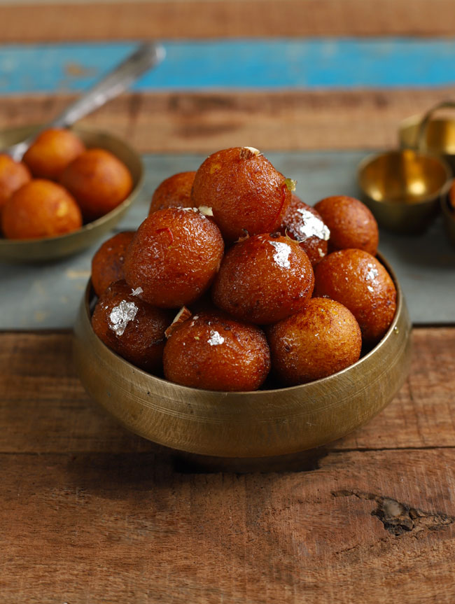
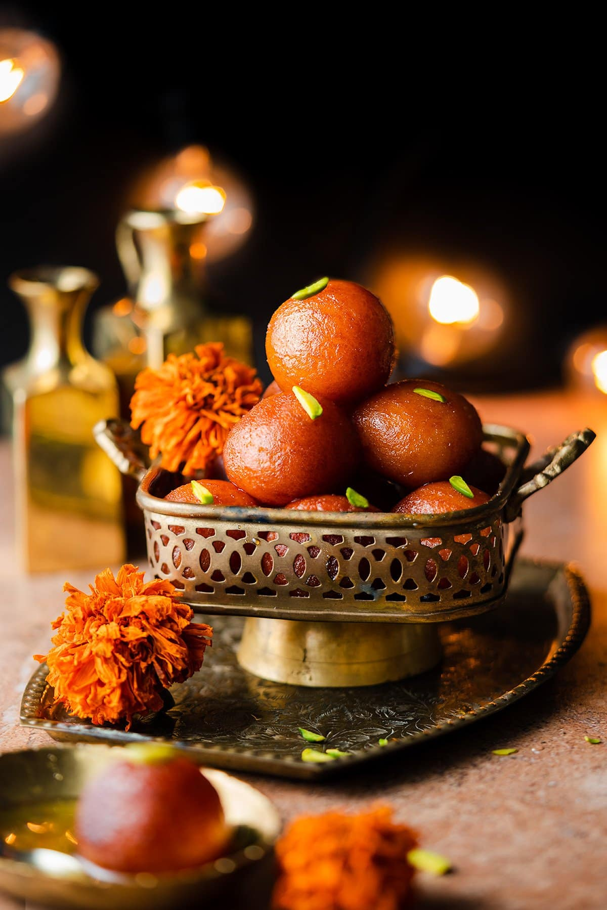
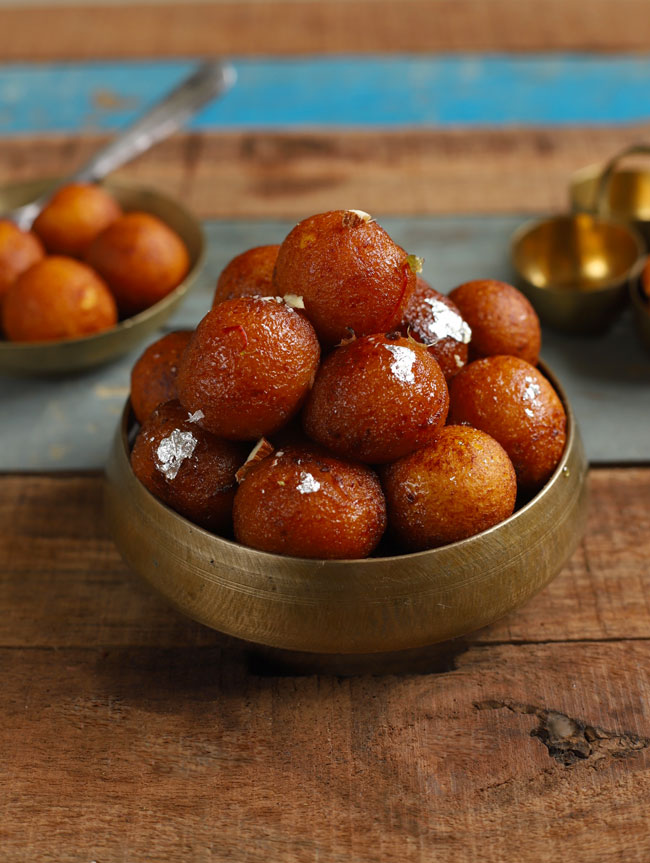
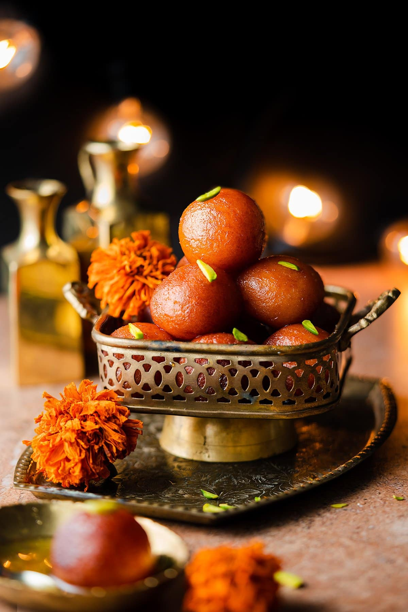
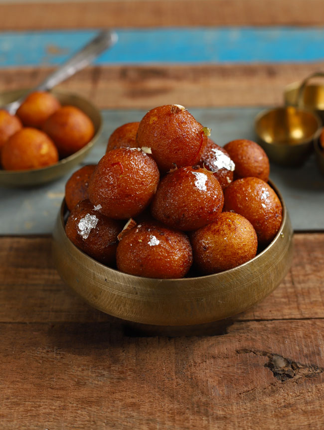
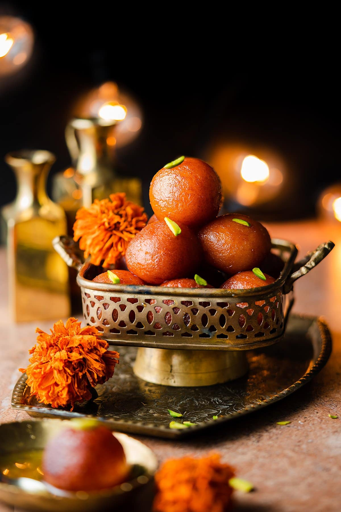
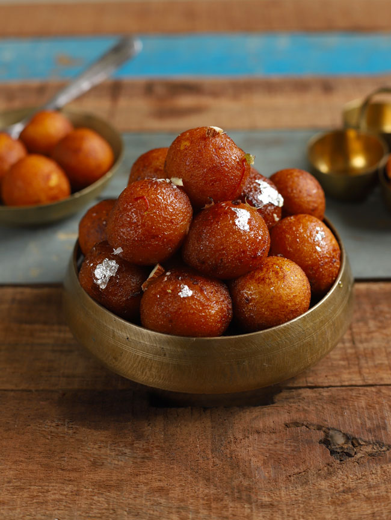
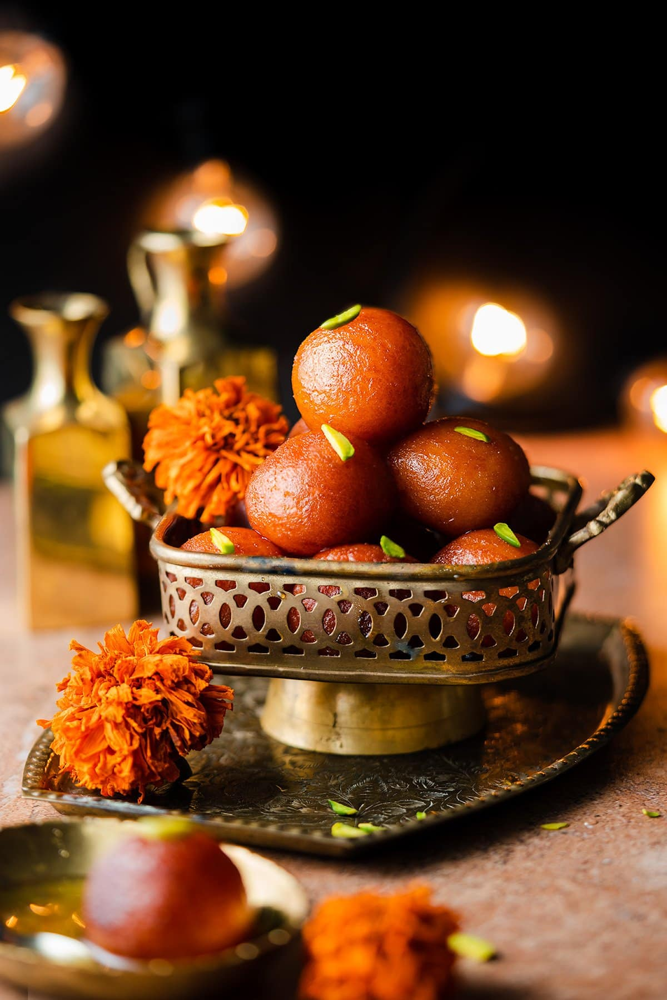

Gulab Jamun is high on the list of the most popular Indian desserts! I mean, who doesn’t love donuts dunked in rose sugar coating? That sounds right up my alley. You can find gulab jamun at festivals and celebrations—it’s a common food to serve during Diwali. In Hindi, the word gulab means rose, and jamun is the berry-sized java plum fruit. Gulab jamuns are small balls that are deep-fried and soaked in rose-flavored sugar syrup.
It’s a popular dessert recipe across India—if there is one dessert that you can find at all weddings, parties and festivals, along with kheer, it’s gulab jamun. But it’s not just for special occasions. It’s a perfect dessert for casual parties and potlucks, too. In our house, food for Diwali, the Festival of Lights, is incomplete without gulab jamun.